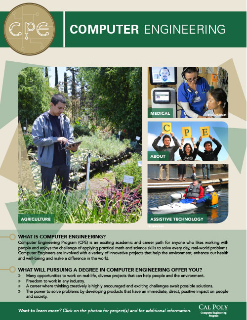

CPE Flyer
Print/ Digital Flyer Design
InDesign, Illustrator, Photoshop
While working for the Computer Engineering Department at Cal Poly, I designed a flyer that was printed and electronically distributed. The flyer was created to be a mailer targeted at High School students to entice them to join the department. Once the printed flyer was created, I converted it into an Interactive Adobe PDF, which was dispersed through Facebook. I also created a new logo for the department that was simple, yet relevant to Computer Engineering.
Printed & Electronic Versions
